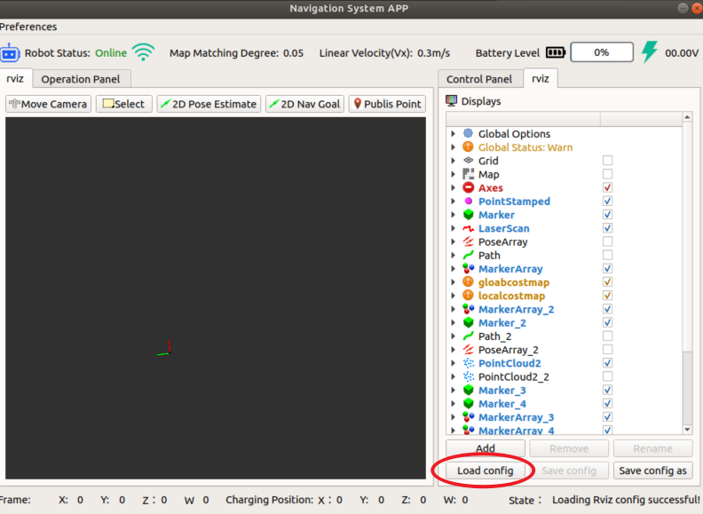
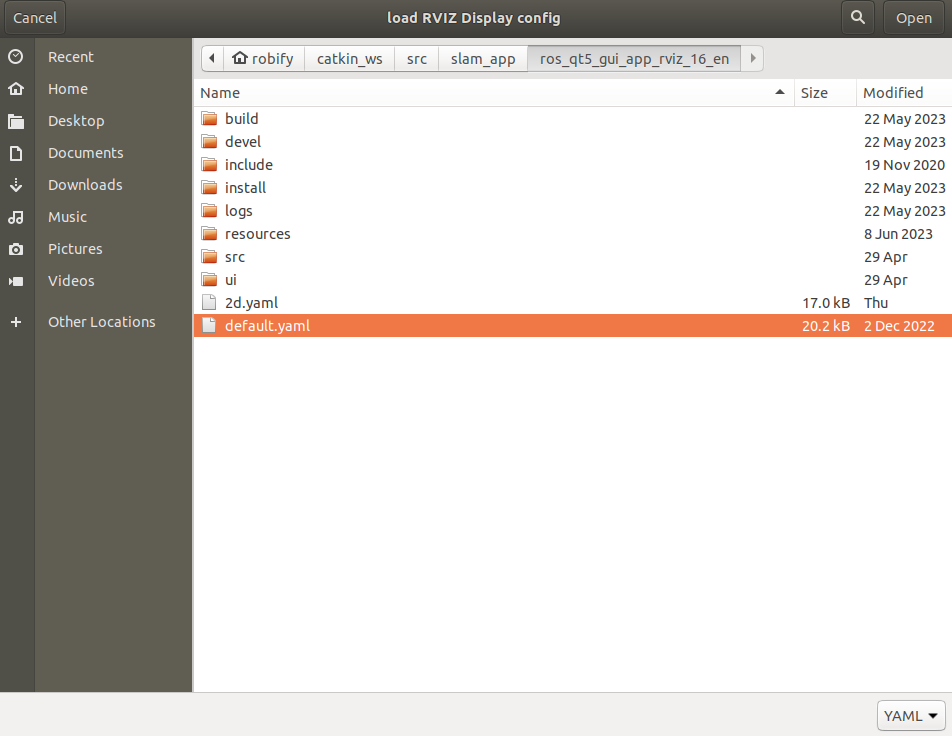
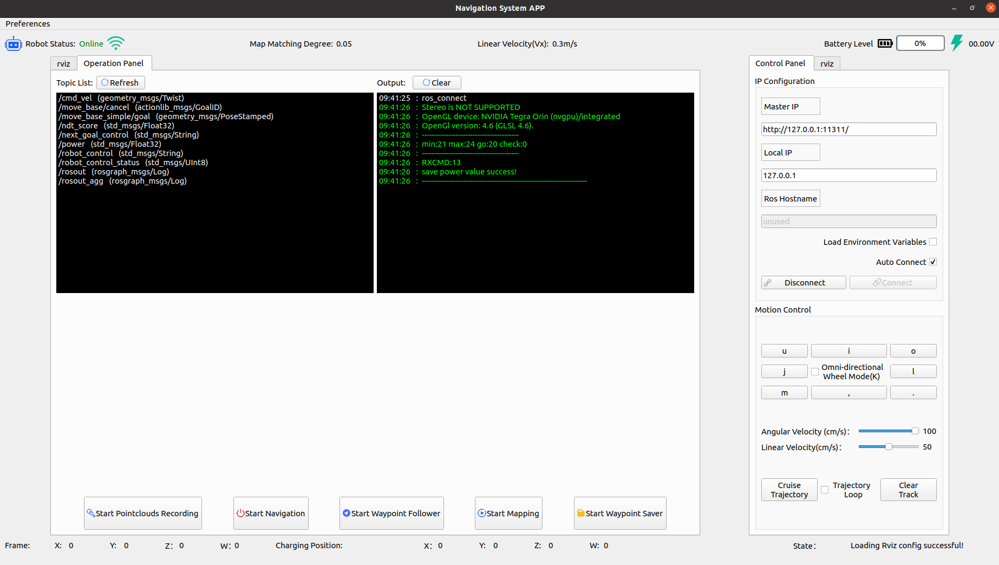
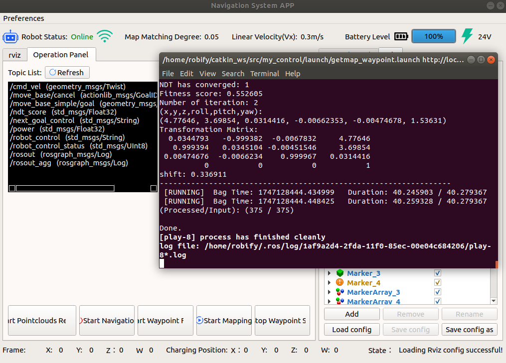
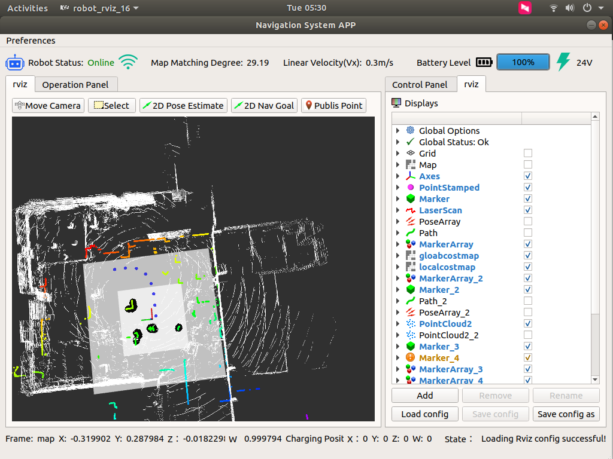
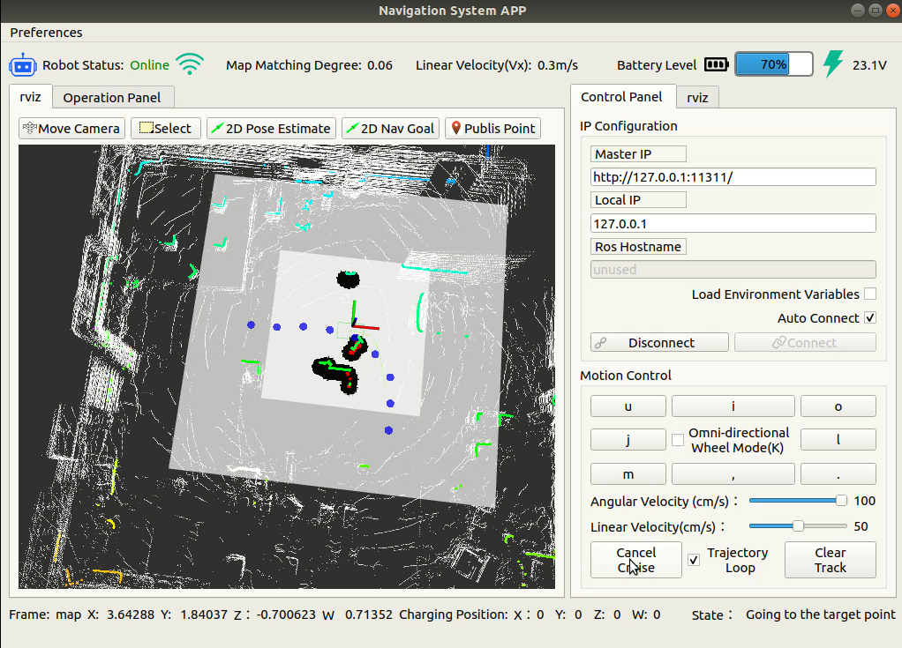
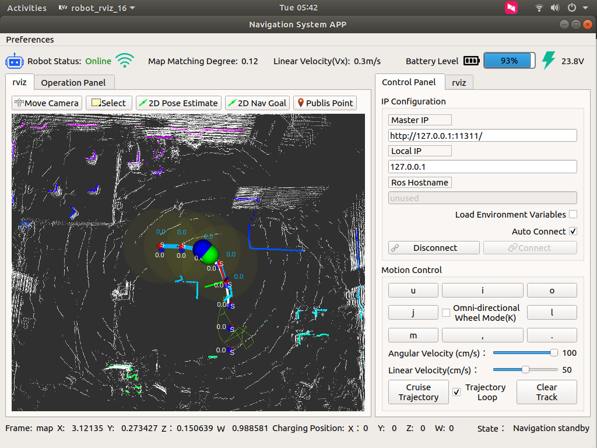
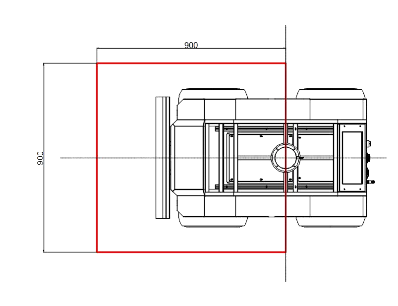

🚗 Autoware 3D SLAM & Navigation
This section introduces the full workflow for RobiX/RobiS robots using the Autoware open-source autonomous driving framework with 3D LiDAR SLAM, waypoint recording, and cruise control.
1. Launch the Autoware Navigation Stack
roslaunch ros_robot_control ros_robot_control.launch
2. Start the RViz-Based Navigation GUI
rosrun robot_rviz_16 robot_rviz_16
3. Configure RViz Display Parameters

Use the following config file:
~/catkin_ws/src/slam_app/ros_qt5_gui_app_rviz_16_en/default.yaml

4. Connect to Upper Computer
- Default main node:
127.0.0.1 - Local IP:
127.0.0.1 - Click Connect
- If failed, restart the upper computer and try again

5. Start Point Cloud Recording
Click Start Pointclouds Record in the interface and drive the robot using the remote.
⚠️ Do not reverse or use erratic patterns like S-turns. Maintain a smooth and forward-only path.
Once done, stop recording.
6. Start Trajectory Recording (Waypoint Saver)
Option 1 — via RViz (not recommended):
Use Publish Point to draw points manually.
Option 2 — preferred:
After finishing point cloud recording, click Start Trajectory Recording. The recorded path will reflect actual movement and is fully drivable.
7. Start Mapping + Trajectory Recording Together
- Click Start Trajectory Recording
- Then click Start Mapping
- Wait until terminal output finishes (Duration stops updating)
- Stop recording — mapping completes automatically

8. Activate Navigation
- Drive the robot to the initial point used during point cloud recording
- Click Start Navigation
- Switch to RViz tab
- Wait for map to load

If positioning seems off, use 2D Pose Estimate in RViz to manually align.
9. Enable Trajectory Cruise
- Navigate to Status tab
- Click Enable Trajectory Cruise
Behavior: - Robot follows the path - Stops at the endpoint - If clicked again, will reverse the path
💡 If started at endpoint, the robot will go:
end -> start -> end
If trajectory loop is enabled, the car will loop:
start → end → U-turn → end → start → U-turn → ...
Ensure enough space for U-turns.

10. Start Waypoint Follower
⚠️ Robot will start immediately when this mode is activated.

- Set the robot to remote control mode first
- Ensure safety and environment clearance
- Press emergency stop if needed
❗ Navigation and tracking modes cannot run at the same time. Turn off navigation first.
Use 2D Pose Estimate to initialize pose if needed.
Obstacle Handling

- Robot stops for obstacles only in the red box detection zone
- Obstacle must not be too close (<0.2m blind zone)
- Robot resumes 2 seconds after the obstacle moves away